蔣萬安
臺北市長
2023 臺北網紅嘉年華出席致詞：「勇於表達自我意見，人人都可以成為網紅。」
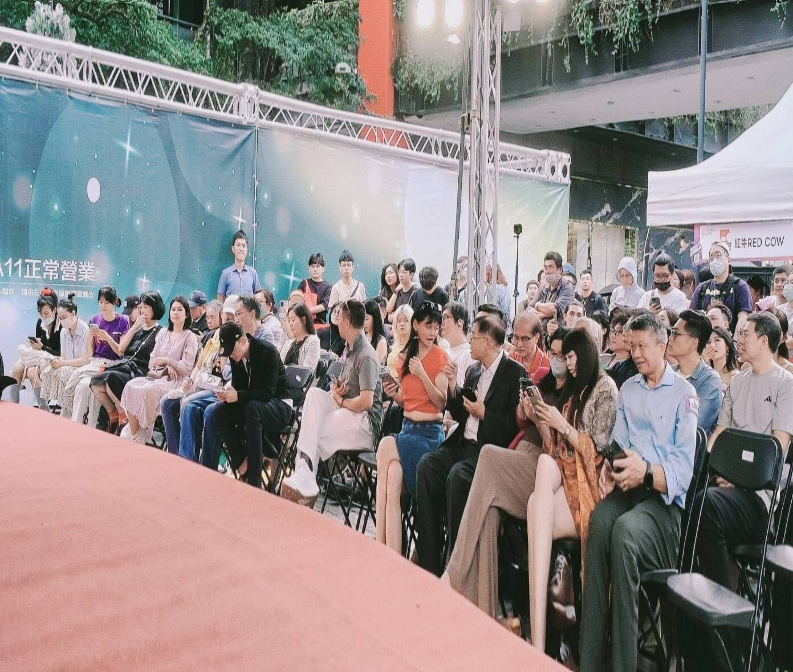
創會理事長 鄭儷絲 公開主張
2023 臺北網紅嘉年華上，理事長率百大網紅出席並公開宣示：協會未來要培養更多身障網紅與銀髮網紅，讓每一種人生經驗都有被看見的機會。
中華網紅協會（CICA）於 2020 年 11 月 1 日正式立案，是依法設立、非以營利為目的的全國性人民團體。我們主張：網紅是一個產業，不是一種特定行為。
五個具體、可驗證的理由——每一項都有活動、有報導、有照片為證。
協會攜手臺北網紅節、TY Star 臺北網紅獎，與臺北市政府商業處、台灣新媒體發展協會、旺旺中時媒體集團共同推動的年度盛事同場。信義香堤大道的實體舞台、上百家媒體的鏡頭，都是你的曝光位。
從 2020 立案至今，協會每年集結超過百位網紅與 KOL。這裡不是線上按讚之交，是頒獎典禮、嘉年華、講座與飯局裡真正認識彼此、互相拉抬的圈子。
協會長期與臺北市商圈組織、品牌與市府資源合作，包含《TOPS 台北好購推廣平台》推薦。當品牌要找創作者，協會就是那份名單。
協會率團參加台越 B2B 投資促進論壇、赴富國島與 HALAL MART VIETNAM 簽署合作備忘錄，並推出「台灣品牌海外展示計畫」。你的內容能力，可以直接對接海外通路。
協會從教育與培訓扎根，培植具潛質的素人，並持續為「網紅是一個產業」發聲。我們也扶助弱勢直播主、培養身障網紅與銀髮網紅，讓舞台不只屬於少數人。
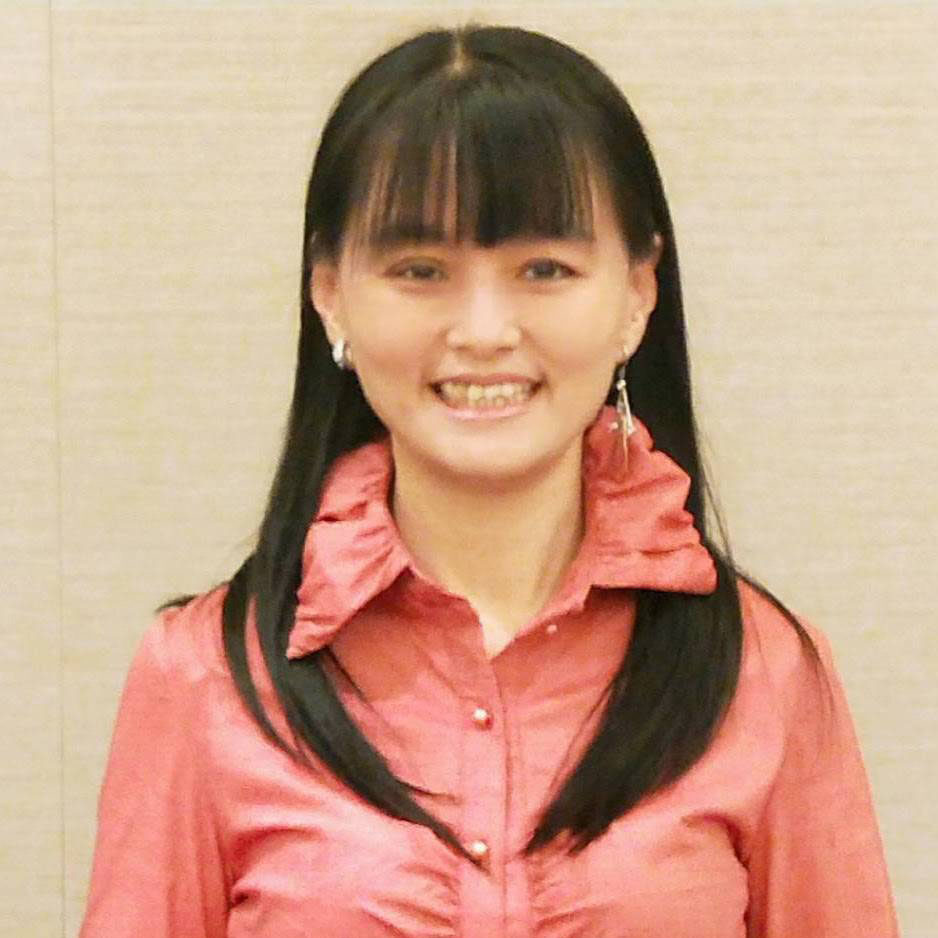
創會理事長 ‧ 永續長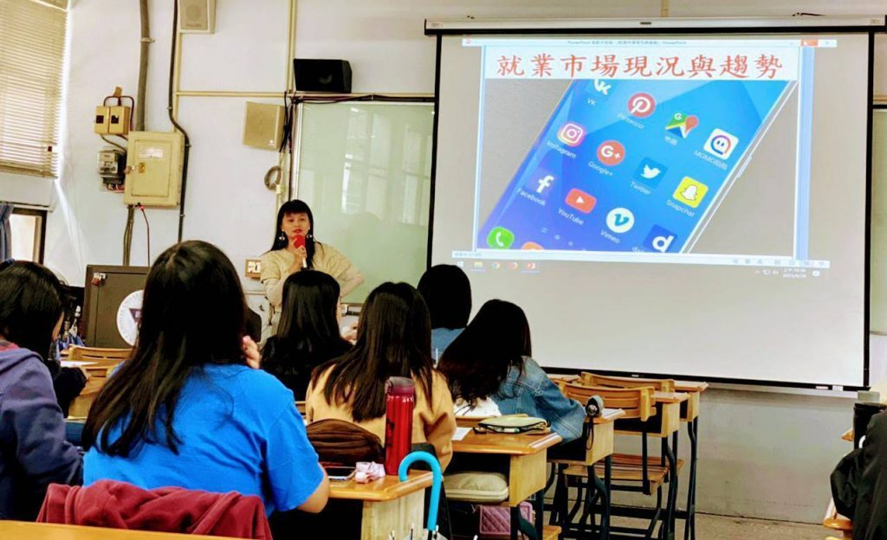
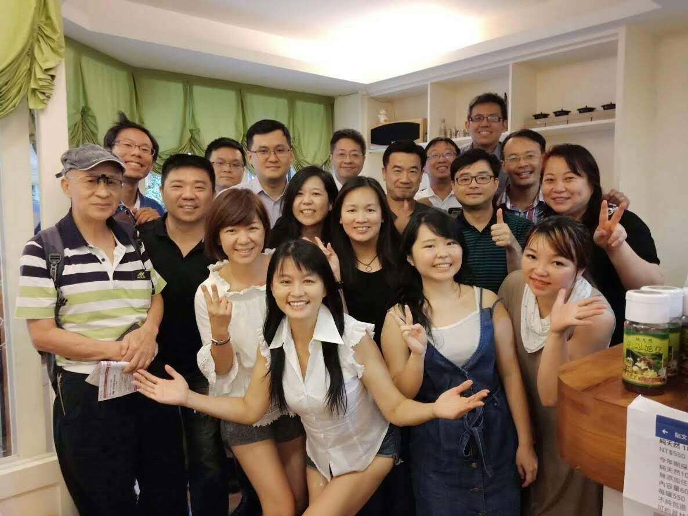
台灣網紅直播界教母、海峽兩岸百萬網紅萬人諮詢輔導、中國抖音互聯網營銷師直播培訓官、海外創業台灣新媒體全元素導師。
擁有十餘年兩岸主持、採訪、活動、企劃與製作經驗，歷經韻流行雜誌、工商時報、自立晚報、捷運報、東森電視台、中都電影台、華爾街財經台與台北 TV；為東森 ET FM 節目製作人暨主持人、正聲廣播「魅力12點」與「幸福事務所」製作暨主持人、中國廣播公司「客家時尚」節目主持人。
亦曾任都會捷運報總編輯、中華民國防癌協會會刊總主筆、中國醫藥導報副總編輯、亞洲肚皮舞總會主任秘書、中華民國國際舞蹈運動總會執行長、中華長照協會副理事長，並參與蔣緯國上將主辦之全球梅花小姐選拔幕前工作。
很多創作者第一次看到「TY Star」都會愣一下。這裡一次講清楚。
TY 是「臺北網紅節（Taipei KOL Festival）」官方沿用的英文識別代號，用在活動名稱、官方信箱與所有主視覺上。主辦單位並未公開發布這兩個字母的正式全稱，所以我們也不替它編故事。
Star 則很直白：獎項依創作者的粉絲量分成星星、月亮、太陽三個星級，另有電商銷售、部落客與商圈永續之星等組別。合起來，正式全名就是「TY STAR 臺北網紅獎」。
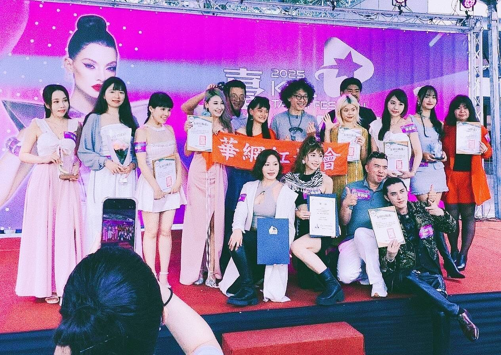
粉絲數 2 萬（含）以下 — 給正在起步的創作者一個被看見的入口。
粉絲數 2 萬至 20 萬（含）— 已有穩定社群、正要跨過門檻的一群。
粉絲數 20 萬以上 — 頭部創作者的年度榮譽。
又稱帶貨組，依實際銷售能力評選，2024 年頒發 7 位。
2024 年首度納入，以文字內容能力勝出。
2025 年首度推出，串聯「全民碳集平台」推動網紅永續任務。
評選方式：初審 → 複審 → 人氣票選 → 總決選（專業評審＋網路票選）。2023 年第三屆近 300 位網紅報名；2024 年第五屆頒發 9 位太陽、8 位月亮、10 位星星、7 位帶貨與 1 位部落客；2025 年永續組 30 組參賽，前三名有獎金；2026 年第七屆全球徵件，不限國籍與年齡。
官方公布名單。下一屆，這裡可以有你的名字。
從立案、產業正名、市府舞台、金卓獎，到越南與清真市場的跨境布局——十三段有新聞佐證的紀錄。
以全國性人民團體之姿完成立案，鄭儷絲擔任創會理事長。發起人來自媒體、娛樂、教育、電子商務、法律與財務等多元專業領域，主張正視個人經濟的新工作型態。
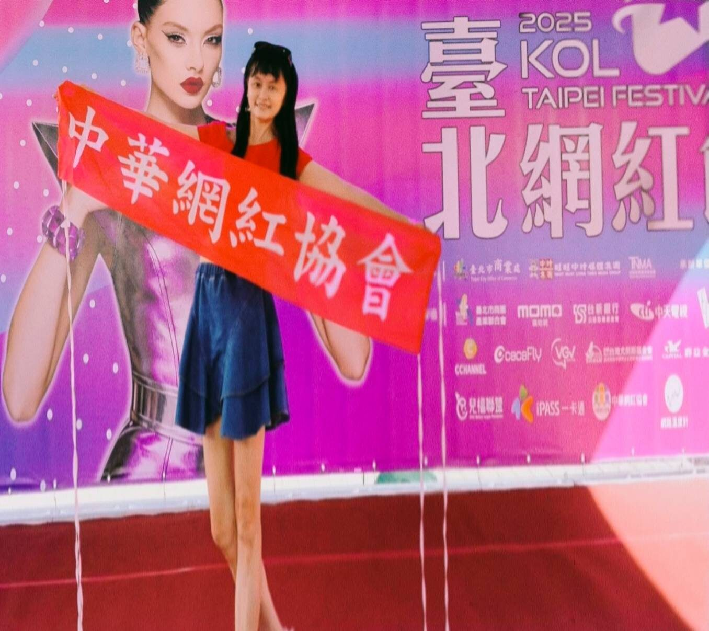
接受蕃新聞、報新聞專訪，公開闡述網紅是一個產業而非特定行為，並說明成立協會的初衷：從教育與培訓扎根，培植具潛質的素人。
與臺北市商業處、旺旺中時媒體集團、台灣新媒體發展協會共同推動的年度盛會，網紅齊聚，引領臺北商圈接軌全球。
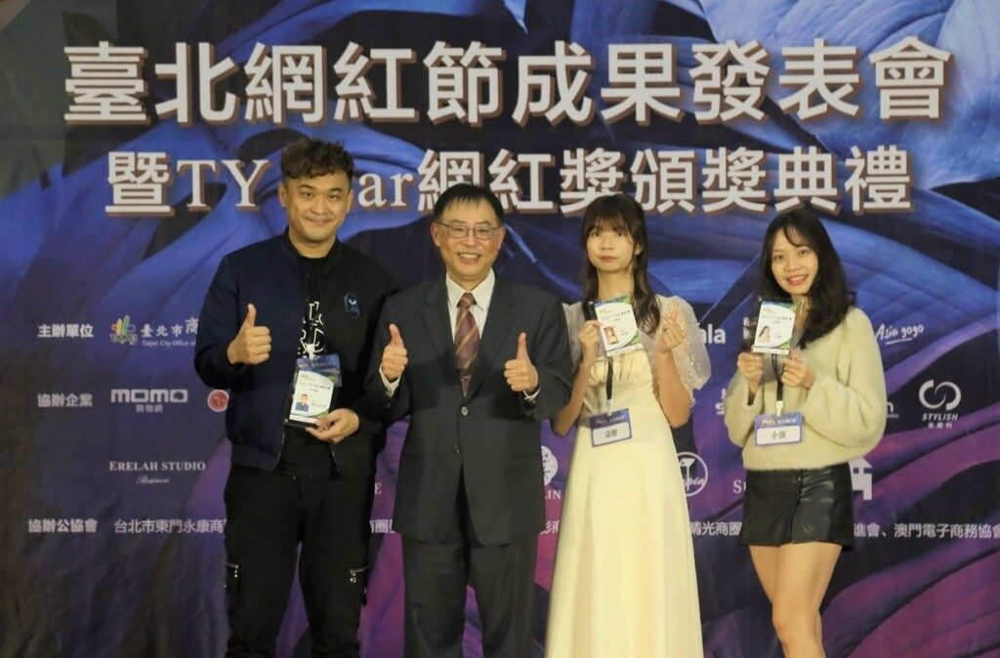
於信義香堤大道登場，市長蔣萬安表示「勇於表達自我意見，人人都可以成為網紅」。理事長率旗下百大網紅參加，並公開宣示要培養身障網紅與銀髮網紅。合作商圈涵蓋萬華街區、貓空休閒產業、愛國東路國際婚紗街與臺北休閒農業。
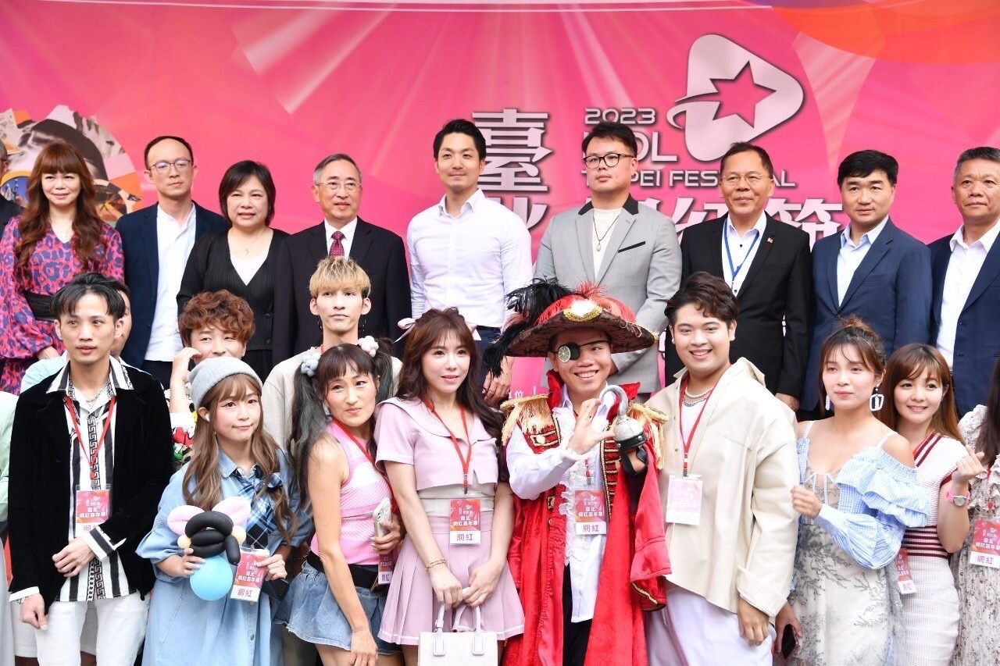
於淡江大學台北校區開講，由理事長主講 TikTok／抖音國際版直播運營，分享兩岸百萬網紅輔導的第一線經驗。
頒獎典禮與網紅嘉年華於信義香堤大道舉行，舞台上出現柯以柔、蹦闆、蕭彤雯、那對夫妻、詹姆士、南珉貞、安芝儇、羅嵐、愛愛LOVE 等人氣創作者與藝人。
中華網紅協會擔任協辦單位，理事長鄭儷絲擔任大會主持人，將網紅產業的能量帶進跨界表彰的舞台。
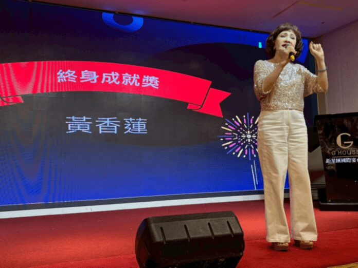
率台灣企業家訪問團與越南 34 個省市、部會、行業協會及海外越南人社區約 900 名代表交流，領域涵蓋醫療、生技、健康、科技、製造、綠能、農業與教育。
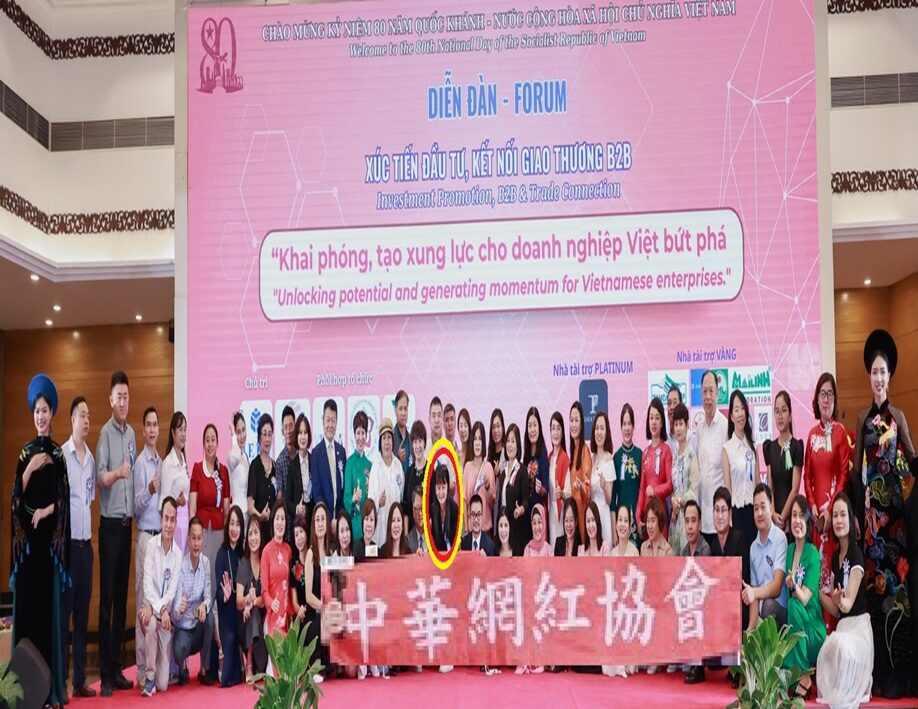
於信義區香堤大道登場，集結超過百位網紅與 KOL。同場舉行 TY Star 網紅獎頒獎，並串聯「全民碳集平台」推動網紅永續任務。
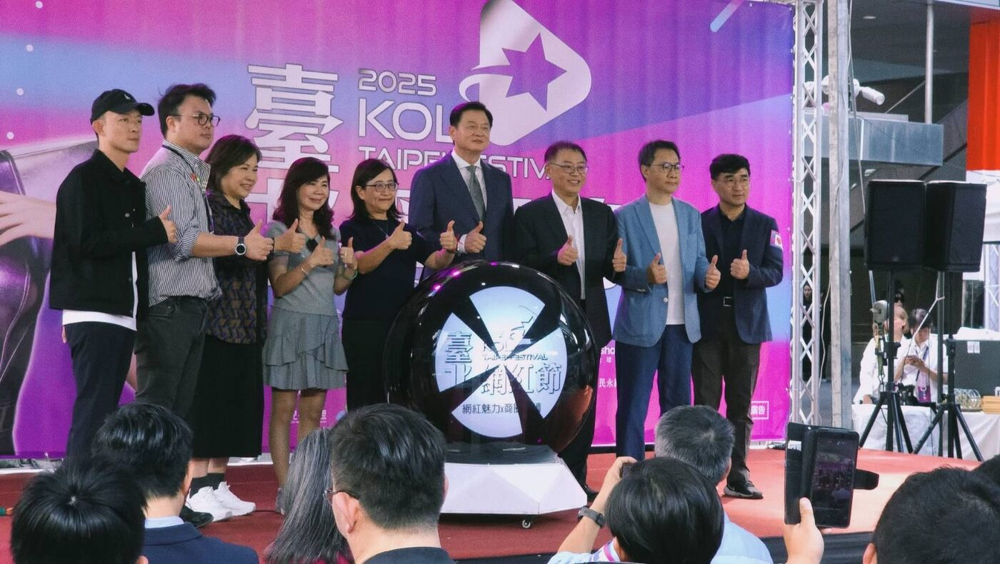
協會擔任協辦單位，鄭儷絲同時為協辦單位代表、大會主持人暨評審。該屆共 36 位獲獎者，資深藝人黃香蓮獲藝術文化終身成就獎。
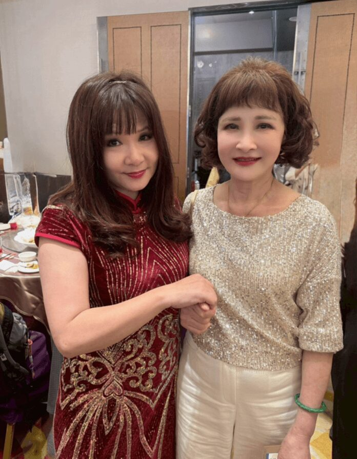
率台灣貴賓團參訪當地清真超市、供應商與合作夥伴，以富國島為布局據點，提前卡位 2027 年 APEC 高峰會商機。
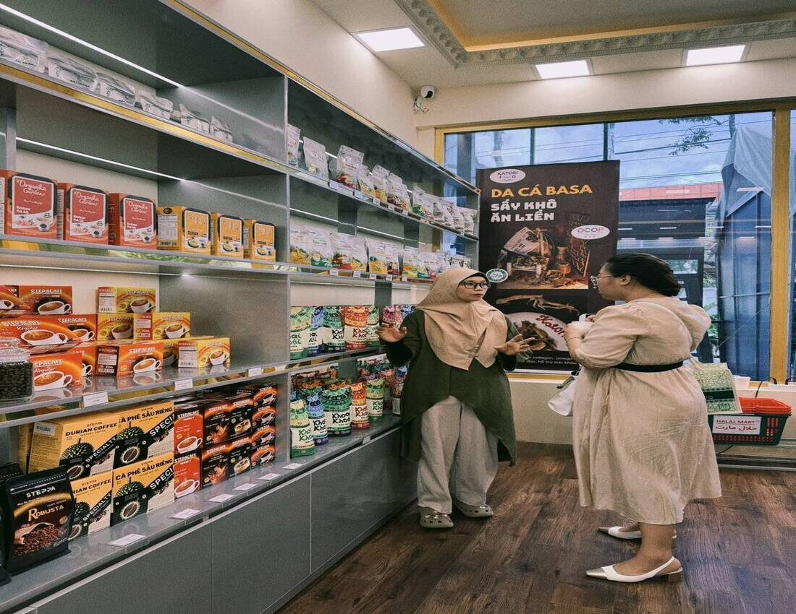
攜手越南 HALAL MART 協助台灣品牌進軍越南與東南亞。招募類別：食品、保健食品、美容保養／化妝品、日用品、寵物食品及用品、文創商品、台灣特色商品；尚未取得清真認證亦可報名。
串接市府通路資源，協助協會夥伴的品牌與商品被更多人看見。
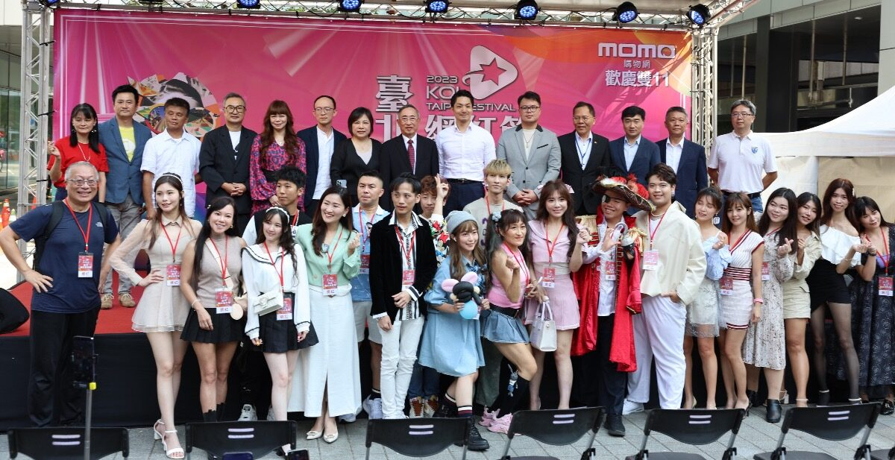
歷屆臺北網紅節、嘉年華、金卓獎、台越經貿論壇與理事長的媒體生涯。點任一張可放大，支援鍵盤左右切換。
圖／中華網紅協會提供、各媒體公開報導。
歷屆臺北網紅節與嘉年華舞台上，出現過的政要貴賓與人氣創作者。
2023 臺北網紅嘉年華出席致詞：「勇於表達自我意見，人人都可以成為網紅。」
2025 臺北網紅節開幕出席，與貴賓共同啟動儀式，見證百位網紅齊聚信義香堤大道。
2024 臺北網紅節舞台亮相，以料理內容跨足電視與社群的代表人物。
說明：以上人物為歷屆臺北網紅節／網紅嘉年華舞台亮相之貴賓與創作者，資料取自公開新聞報導，非表示其為本會會員或簽約網紅。部分創作者目前僅有活動現場照，故以名牌方式呈現；更多代表人物將陸續公布。
27 則公開報導，全部實測可開。經濟日報、工商時報、中時新聞網、臺北市政府新聞稿與蕃新聞等媒體的完整紀錄。
不論你是剛起步的素人、經營中的 KOL、直播主，或是想找創作者的品牌與商圈夥伴——中華網紅協會都歡迎你。
目前入會與合作洽詢，請直接私訊官方粉專或加入官方社團，會有專人回覆。
理事長的個人品牌社群
八個平台，全部實測可開。點一下就能直接追蹤。